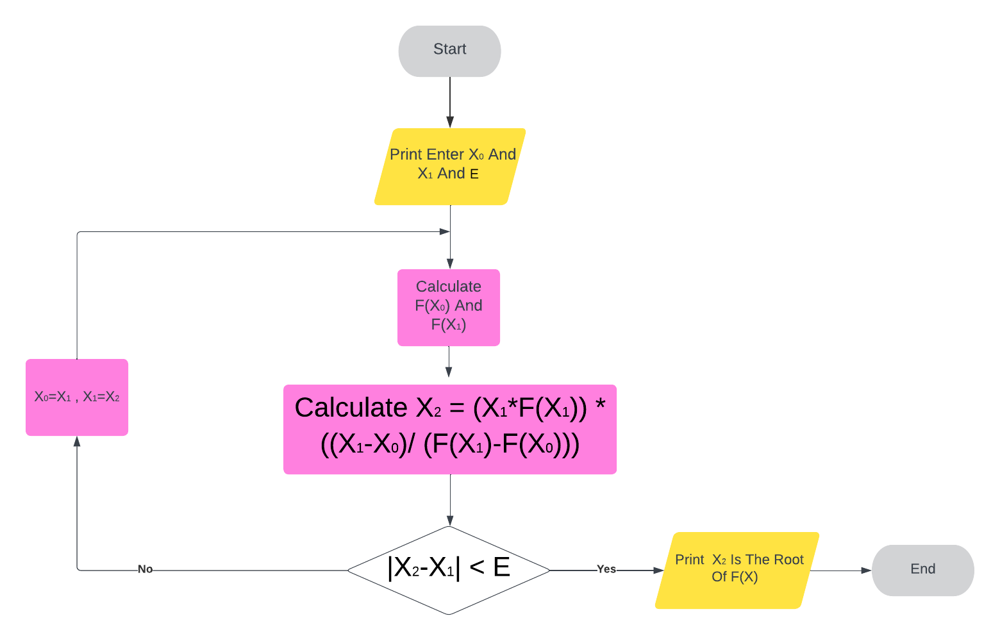

Bisection Method
1. Start

False Position Method
1. Start
Secant Method
1. Start
2. Get X0, X1 And E Where Is The Stopping Criteria
3. Calculate F(X0) And F(X1)
4. Calculate X2 = (X1 * F(X1) ) * ((X1-X0) / (F(X1)-F(X0)))
5. Calculate |X2-X1|
6. IF |X2-X1| Is Not Less Than E , Then Let X0=X1 , X1=X2
7. Repeat Number 4
8. Repeat Number 5
9. IF |X2-X1| Is Less Than E , Then X2 Is The Root Of F(X)
10. Stop